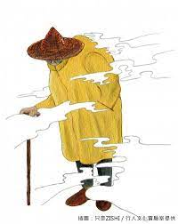

玉山小飛俠

事件地點
奇萊山
描述
玉山小飛俠（坊間又稱玉山黃色小飛俠、黃衣小飛俠）為台灣流傳的山區傳說。1990年代之前岳界並無此一說法或傳說。
大致上為玉山登山客所見，並被認為和山難有關；據說在玉山南峰叉路口看到三個戴著寬緣大斗笠，穿黃色登山斗蓬雨衣（俗稱「小飛俠雨衣」）的男子站在山谷的邊緣，明明隊伍就在前方，有些登山客卻因而不明就裡地脫隊，跟著這三個人而墜谷。也有人說這三個人會指引登山客錯誤方向。
據說排雲山莊前管理員胡良武、朱克禮也曾目睹數名類似特徵的不明人士前來敲門。
類似的傳說後來也出現在山難頻傳的奇萊山區；由於出現地點可能不限於玉山，從民間信仰的觀點，被認為是山魅。[1]民俗學研究者認為玉山小飛俠這種舉動有冤魂捉交替的意味，不像是民間經典的山魅形象。